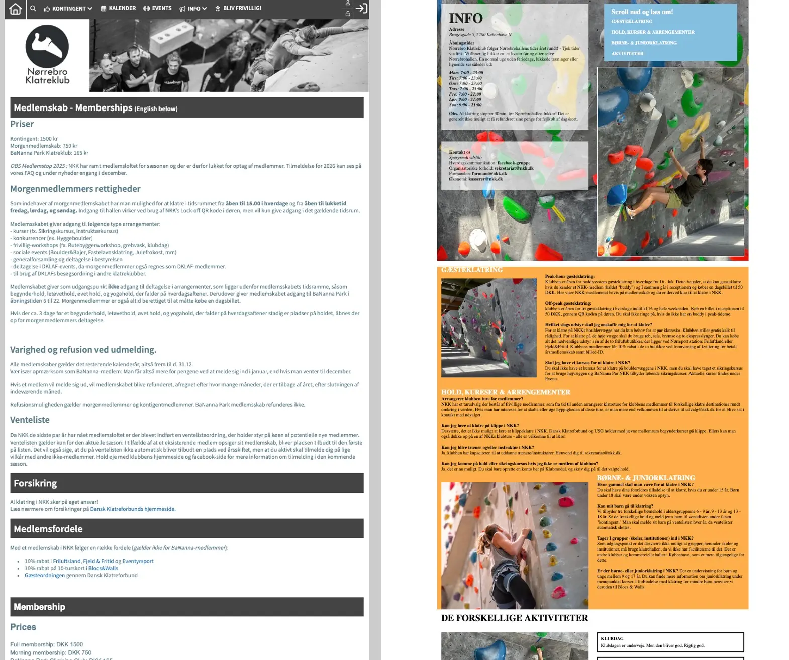

Tema 05
Grundlæggende indhold
Introduktion
I tema 5 skulle vi arbejde i grupper, hvor vi skulle lave et redesign af en selvvalgt hjemmeside fra en virksomhed. Her valgte vi Nørrebro klatreklub, da vi synes der var meget vi kunne arbejde med.
Fremgangsmåde og processer
I dette team lærte vi at arbejde sammen i vs code via github. Derudover blev vi introduceret til Lottie-filer, som er et mere bæredygtigt alternativ. I forbindelse med vores research til et redesign af Nørrebro Klatreklubs hjemmeside indledte vi processen med en 5-second test af forsiden.
Formålet var at undersøge, hvilke elementer brugerne først lagde mærke til, om budskabet var tydeligt, og hvilke dele af designet der fungerede - eller ikke fungerede - optimalt. Testen viste, at brugerne havde svært ved at afkode sidens formål. Forsiden fremstod teksttung og uoverskuelig, hvilket skabte forvirring.På baggrund af resultaterne analyserede vi, hvordan lignende hjemmesider kommunikerer deres indhold, for at indsamle inspiration til vores redesign.
Hvad har jeg lært på dette tema?
I dette tema lærte vi at arbejde i grupper og kode sammen via git og github. Derudover har jeg fået indsigt i, hvordan vi kunne optimere en eksisterende hjemmeside ved hjælp af brugerundersøgelser og tests, der giver en bedre forståelse af, hvordan siden opleves og anvendes af brugerne.